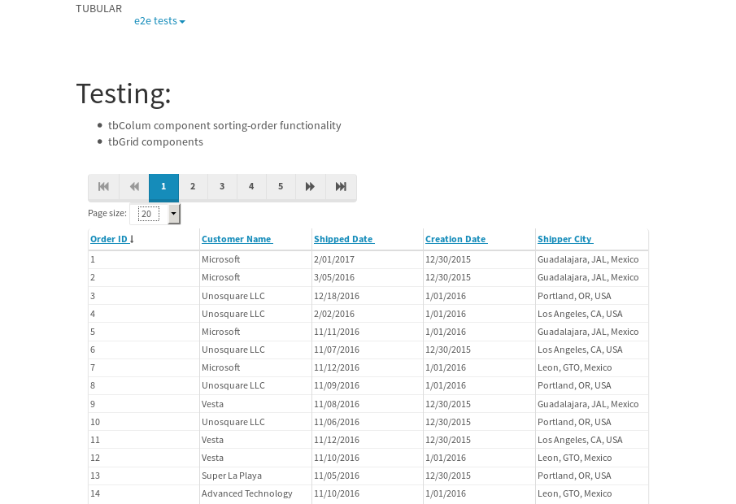
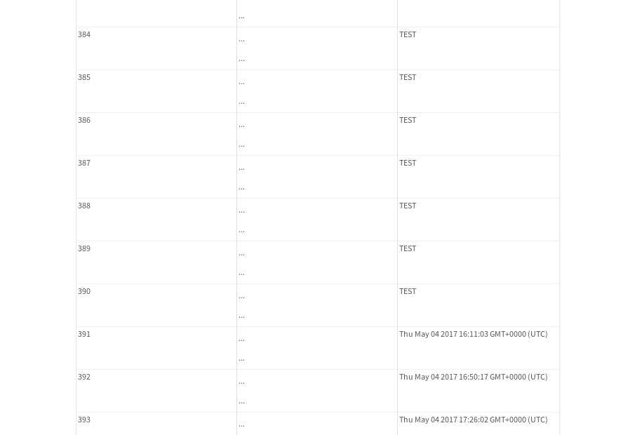
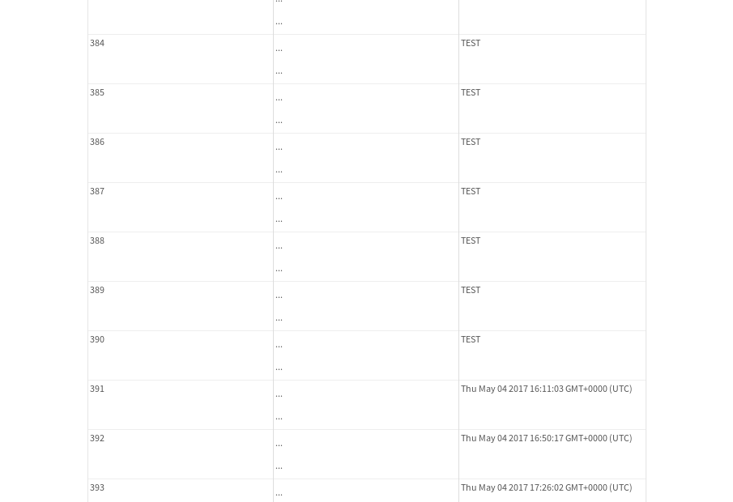
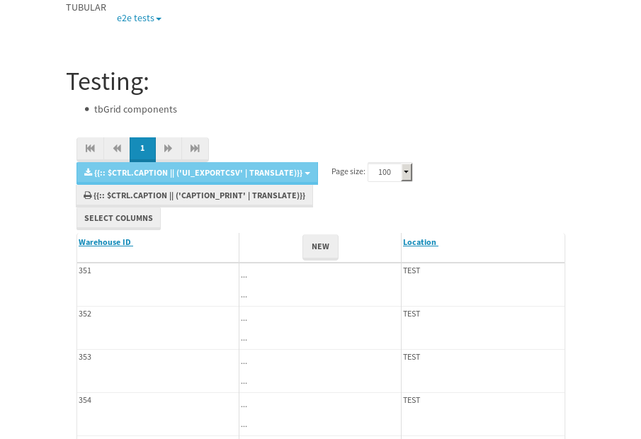

tbColumn.Grid Sorting - 181.578sTests: 5Skipped: 0Failures: 3 should sort data in ascending order then on descending order when sorting by Order Id column - 45.235sExpected '1' to be '500'.✗Expected '20' to be '481'.✗Tests passed: 50.00%should order data in ascending order when click-sorting an unsorted text column - 23.684sTests passed: 100.00%should order data in descending order when click-sorting an ascending-sorted text column - 43.856sExpected 'Advanced Technology Systems' to be 'Vesta'.✗Tests passed: 0.00%should order data in ascending order when click-sorting an unsorted date column - 23.193sTests passed: 100.00%should order data in descending order when click-sorting twice an unsorted date column - 45.601sExpected '12/30/2015' to match /1\/01\/2016/.✗Tests passed: 0.00%
tbEmptyForm - 3.434sTests: 3Skipped: 0Failures: 0 should have an empty required field - 1.783sTests passed: 100.00%should not be able to click on save - 0.029sTests passed: 100.00%should load default value for numeric field - 0.035sTests passed: 100.00%
Tubular Filters.tbColumnFilter - 118.41sTests: 12Skipped: 0Failures: 0 should cancel filtering when clicking outside filter-popover - 8.905sTests passed: 100.00%should disable Value text-input for "None" filter - 6.205sTests passed: 100.00%should disable apply button for "None" filter - 6.781sTests passed: 100.00%should decorate popover button when showing data is being filtered for its column - 15.237sTests passed: 100.00%should correctly filter data for the "Equals" filtering option - 8.338sTests passed: 100.00%should correctly filter data for the "Not Equals" filtering option - 8.055sTests passed: 100.00%should correctly filter data for the "Contains" filtering option - 8.102sTests passed: 100.00%should correctly filter data for the "Not Contains" filtering option - 9.411sTests passed: 100.00%should correctly filter data for the "Starts With" filtering option - 8.756sTests passed: 100.00%should correctly filter data for the "Not Starts With" filtering option - 8.789sTests passed: 100.00%should correctly filter data for the "Ends With" filtering option - 6.428sTests passed: 100.00%should correctly filter data for the "Not Ends With" filtering option - 12.105sTests passed: 100.00%
Tubular Filters.tbColumnDateTimeFilter - 123.339sTests: 12Skipped: 0Failures: 0 should cancel filtering when clicking outside filter-popover - 6.428sTests passed: 100.00%should disable Value text-input for "None" filter - 5.603sTests passed: 100.00%should disable apply button for "None" filter - 5.753sTests passed: 100.00%should clear filtering when clicking on Clean button - 16.655sTests passed: 100.00%should decorate popover button when showing data is being filtered for its column - 11.033sTests passed: 100.00%should correctly filter data for the "Equals" filtering option - 5.798sTests passed: 100.00%should correctly filter data for the "Not Equals" filtering option - 6.189sTests passed: 100.00%should correctly filter data for the "Between" filtering option - 10.939sTests passed: 100.00%should correctly filter data for the "Greater-or-equal" filtering option - 10.829sTests passed: 100.00%should correctly filter data for the "Greater" filtering option - 10.86sTests passed: 100.00%should correctly filter data for the "Less-or-equal" filtering option - 11.053sTests passed: 100.00%should correctly filter data for the "Less" filtering option - 11.165sTests passed: 100.00%
Tubular Filters.tbColumnOptionsFilter - 79.235sTests: 3Skipped: 0Failures: 0 should cancel filtering when clicking outside filter-popover - 8.335sTests passed: 100.00%should decorate popover button when showing data is being filtered for its column - 11.167sTests passed: 100.00%should filter column-elements in accordance to the selected filter when selecting a single option - 48.37sTests passed: 100.00%
Tubular Filters.tbTextSearch - 43.708sTests: 5Skipped: 0Failures: 0 min-chars is not set - 0.067sTests passed: 100.00%should filter data in searchable-column customer name to matching inputted text, starting from 3 characters - 5.827sTests passed: 100.00%should filter data in searchable-column shipper city to matching inputted text, starting from 3 characters - 10.959sTests passed: 100.00%should show clear button when there is inputted text only - 5.702sTests passed: 100.00%should clear filtering when clicking clear button - 15.566sTests passed: 100.00%
tbForm related components.tbCheckboxField - 20.404sTests: 2Skipped: 0Failures: 1 should save changes on "SAVE" - 18.196sExpected 51 to be -1.✗Tests passed: 50.00%should discard changes on "CANCEL" - 0.953sTests passed: 100.00%
tbForm related components.tbDropDownEditor - 22.58sTests: 5Skipped: 0Failures: 0 should set initial input value to the value of "value" attribute when defined - 0.987sTests passed: 100.00%should show the component name value in a label field when "showLabel" attribute is true - 1.138sTests passed: 100.00%should show a help field equal to this attribute, is present - 0.79sTests passed: 100.00%should submit modifications to item/server when clicking form "Save" - 17.965sTests passed: 100.00%should NOT submit modifications to item/server when clicking form "Cancel" - 1.036sTests passed: 100.00%
tbForm related components.tbTextArea - 24.202sTests: 7Skipped: 0Failures: 0 should set initial input value to the value of "value" attribute when defined - 1.03sTests passed: 100.00%should be invalidated when the number of chars is not in the range of "min" and "max" attributes - 1.388sTests passed: 100.00%should show the component name value in a label field when "showLabel" attribute is true - 0.701sTests passed: 100.00%should show a help field equal to this attribute, is present - 0.738sTests passed: 100.00%should require the field when the attribute "required" is true - 0.836sTests passed: 100.00%should submit modifications to item/server when clicking form "Save" - 17.818sTests passed: 100.00%should NOT submit modifications to item/server when clicking form "Cancel" - 1.017sTests passed: 100.00%
tbForm related components.tbDateEditor - 23.89sTests: 6Skipped: 0Failures: 0 should set initial date value to the value of "value" attribute when defined - 0.783sTests passed: 100.00%should be invalidated when the date is not in the range of "min" and "max" attributes - 1.181sTests passed: 100.00%should show the component name value in a label field when "showLabel" attribute is true - 0.864sTests passed: 100.00%should show a help field equal to this attribute, is present - 0.865sTests passed: 100.00%should submit modifications to item/server when clicking form "Save" - 17.869sTests passed: 100.00%should NOT submit modifications to item/server when clicking form "Cancel" - 1.275sTests passed: 100.00%
tbForm related components.tbTypeaheadEditor - 26.574sTests: 7Skipped: 0Failures: 1 should show an options list when there is an API-info/component entered-data - 1.332sTests passed: 100.00%should select the option clicked - 1.258sTests passed: 100.00%should show a "delete" button when an option/match is selected, and delete the option if button is clicked - 1.505sTests passed: 100.00%should show a label value equal to the component name when "showLabel" attribute is true - 0.87sTests passed: 100.00%should require a value when "require" attribute is true - 1.267sTests passed: 100.00%should submit modifications to item/server when clicking form "Save" - 18.131sExpected 'Guadalajara, JAL, Mexico' to match 'Portland, OR, USA'.✗Tests passed: 0.00%should NOT submit modifications to item/server when clicking form "Cancel" - 1.203sTests passed: 100.00%
tbForm related components.tbSimpleEditor - 25.761sTests: 9Skipped: 0Failures: 0 should set initial input value to the value of "value" attribute when defined - 0.818sTests passed: 100.00%should be invalidated when the number of chars is not in the range of "min" and "max" attributes - 1.069sTests passed: 100.00%should show the component name value in a label field when "showLabel" attribute is true - 0.643sTests passed: 100.00%should set input placeholder to the value of "placeholder" attribute - 0.79sTests passed: 100.00%should validate the control using the "regex" attribute, if present - 0.848sTests passed: 100.00%should show a help field equal to this attribute, is present - 0.885sTests passed: 100.00%should require the field when the attribute "required" is true - 0.791sTests passed: 100.00%should submit modifications to item/server when clicking form "Save" - 18.26sTests passed: 100.00%should NOT submit modifications to item/server when clicking form "Cancel" - 1.066sTests passed: 100.00%
tbForm related components.tbNumericEditor - 30.306sTests: 7Skipped: 0Failures: 0 should set initial component value to the value of "value" attribute when defined - 0.817sTests passed: 100.00%should be invalidated when the entered number is not in the range of "min" and "max" attributes - 6.651sTests passed: 100.00%should show the component name value in a label field when "showLabel" attribute is true - 0.793sTests passed: 100.00%should show a help field equal to this attribute, is present - 0.91sTests passed: 100.00%should require the field when the attribute "required" is true - 0.939sTests passed: 100.00%should submit modifications to item/server when clicking form "Save" - 18.195sTests passed: 100.00%should NOT submit modifications to item/server when clicking form "Cancel" - 1.293sTests passed: 100.00%
tbForm Connection Error NoModelKey - 2.391sTests: 1Skipped: 0Failures: 0 tbForm connection error functionality - 0.004sTests passed: 100.00%
tbForm Connection Error NoServerUrl - 1.863sTests: 1Skipped: 0Failures: 0 tbForm connection error functionality - 0.002sTests passed: 100.00%
tbGridComponents - 7.426sTests: 6Skipped: 0Failures: 4 should add item with newRow method - 3.938sTests passed: 100.00%should add item with newRow method and cancel action - 0.481sTests passed: 100.00%should update item with tbSaveButton - 0.328sFailed: Element is not currently interactable and may not be manipulated✗Tests passed: 0.00%should NOT update item on cancel Update action - 0.639sFailed: Element is not visible✗Tests passed: 0.00%should remove item with tbRemoveButton - 0.365sFailed: No element found using locator: By(css selector, div.popover)✗Tests passed: 0.00%should NOT remove item on cancel Remove action - 0.278sFailed: No element found using locator: By(css selector, div.popover)✗Tests passed: 0.00%
tbGridPager.navigation buttons - 2.457sTests: 1Skipped: 0Failures: 0 should perform no action when clicking on the numbered navigation button corresponding to the current-showing results page - 0.639sTests passed: 100.00%
tbGridPager.navigation buttons.first/non-last results page related functionality - 0.698sTests: 2Skipped: 0Failures: 0 should disable "first" and "previous" navigation buttons when in first results page - 0.111sTests passed: 100.00%should enable "last" and "next" navigation buttons when in a results page other than last - 0.587sTests passed: 100.00%
tbGridPager.navigation buttons.last/non-first results page related functionality - 1.12sTests: 2Skipped: 0Failures: 0 should disable "last" and "next" navigation buttons when in last results page - 0.564sTests passed: 100.00%should enable "first" and "previous" navigation buttons when in a results page other than first - 0.556sTests passed: 100.00%
tbGridPager.page navigation - 4.693sTests: 5Skipped: 0Failures: 0 should go to next results page when clicking on next navigation button - 1.135sTests passed: 100.00%should go to previous results page when clicking on previous navigation button - 1.4sTests passed: 100.00%should go to last results page when clicking on last navigation button - 1.001sTests passed: 100.00%should go to first results page when clicking on first navigation button - 0.583sTests passed: 100.00%should go to corresponding results page when clicking on a numbered navigation button - 0.574sTests passed: 100.00%
tbGridPagerInfo - 4.623sTests: 2Skipped: 0Failures: 0 should show text in accordance to numbered of filter rows and current results-page - 2.073sTests passed: 100.00%should show count in footer - 0.027sTests passed: 100.00%
tbPageSizeSelctor - 17.239sTests: 4Skipped: 0Failures: 0 should filter up to 10 data rows per page when selecting a page size of "10" - 2.51sTests passed: 100.00%should filter up to 20 data rows per page when selecting a page size of "20" - 2.661sTests passed: 100.00%should filter up to 50 data rows per page when selecting a page size of "50" - 7.13sTests passed: 100.00%should filter up to 100 data rows per page when selecting a page size of "100" - 3.44sTests passed: 100.00%
tbSingleForm - 15.868sTests: 8Skipped: 1Failures: 1 should load correct info - 0s***Skipped***Tests passed: 0%should change customer name - 1.77sTests passed: 100.00%should save it - 2.103sExpected '' to be 'Saved'.✗Tests passed: 50.00%should clear the inputs - 1.93sTests passed: 100.00%should update - 1.897sTests passed: 100.00%should reset editor - 1.799sTests passed: 100.00%should not save if not Changes - 2.483sTests passed: 100.00%should not be able to click on save - 3.885sTests passed: 100.00%


{kind=link}
{kind=link}
{kind=link}
{kind=link}